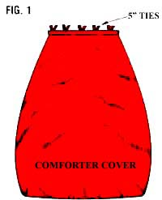
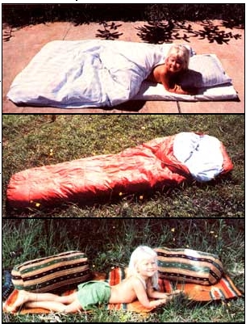
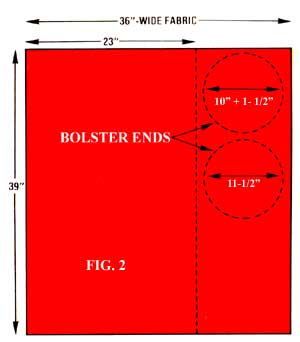

Issue No. 80 - March/April 1983
If you've ever packed into the back country, or piled your young'uns (and their seemingly endless array of gear) into the car and headed off for a sojourn in the woods, or even just pitched the old pup tent in a friend's yard while traveling ... chances are that you've experienced the cozy comfort of a good sleeping bag.
I have, and I put a value on my downfilled snoozer that's far higher than the bag's actual cash price. After all, the portable "bed" is light to carry, it can be compacted into a small mass for packing, and - once the bag is fluffed out to its full loft and I'm snuggled inside - it's toasty enough to combat even the chill of a winter-camping morning.
Furthermore, if given proper care, a quality down bag will last for many years. My husband and I received our traveling sleepers as wedding presents ... and they still look as good as new, even though they've already seen seven years of hard use.
And as an important bonus - in addition to offering warmth, compactability, light weight, and long wear - a down bag can be used for far more than just "vacation bed ding", which is brought out of storage only when a camping trip is in the offing. In fact, it needn't go into storage at all: Between backpacking trips, I convert my bag into a comforter in winter and a bolster in summer ... and thus use the sack yearround!
THE COMFORTER
A good number of folks, of course, do turn their sleeping bags into blankets ... by simply tossing the sacks over their beds at night. However, my experience with this "improvised quilt" technique seemed always to end with my waking up shivering in the middle of the night because the bag had skittered off the bed and was lying on the floor in a large heap (likely with a sleepy dog snuggled on top). So, to make sure that the sack stays in place and warms my toes instead of those of my canine friends, I borrowed an old Scandinavian idea ... and devised a slip-free cover that effectively domesticates the slithery outdoor bedding.
Any sleeping bag that can be unzipped to lie completely flat is a comforter candidate. And the only supplies you'll need to make the conversion are a spool of thread, some straight pins, and enough material to encase the down sleeper. I find that two colorful full-sized (81" X 96") cotton sheets can be used to make an excellent cover. If you prefer a different fabric, though (some folks like to use flannel), just prepare two sheetsized sections, and hem one of the narrow ends of each piece.
Now, you're ready to construct the cover. Lay the two sheets - right sides together - on a firm, flat surface (in my house that's the floor, with newspapers spread out to keep my work clean), and spread the unzipped down bag, opened flat, on top ... so that the hemmed edges of the fabric pieces extend an inch or so beyond the end of the sack. Then-while carefully holding the feather-filled sleeper in position-use a felttipped pen or tailor's chalk to trace the form of the bag on the cloth.
With that done, remove the sack ... pin the two sheets together along your tracing ... and cut out the shape, leaving a 1" margin between the pin line and your cutting line. Next, sew a 3/8" seam around the three unhemmed sides of the material. Then simply remove the pins, turn the cover right side out, and slip your sleeping bag inside! To keep it there, attach snaps, strips of Velcro fastener, or ribbon ties to the open edges of the casing (as indicated in Fig. 1).
The completed coverlet will keep your sleeping bag clean and add a nonslippery down comforter to your family's supply of winter bedding. What's more, when you next go campingespecially in cold weather-you can slip the homemade comforter casing inside your sleeping bag ... to provide additional warmth and to protect the sack's inner surfaces.
THE BOLSTER
While the comforter cover/bag liner can help you get full use of your sleeper during the cold season, you might wonder what to do with that expensive piece of equipment when you're between campouts during the warm months to come. Well, after the summer sun thaws the comforter off my bed, I simply slip the feathered bedwarmer into a bolster cover and use the bag as a cylindrical pillow! The case is easy to construct ... and since it's bigger than the average stuff sack, it's less likely to mat the fragile down filling.
The only raw materials needed to make the headrest cover are a 39" length-just over a yardof 36"-wide material (I find a medium- to heavyweight fabric works best), thread, straight pins, and a couple of strips of Velcro fastener.
The measurements indicated in Fig. 2 will neatly house my 4-1/4-pound down sleeping bag. If your sleeper is radically different in weight, you might consider custom-designing your cover. To do so, roll up your sleeping bag and slip it in a pillowcase. Then measure [a] the diameter of the end circle (add 1-1/2" for the seam allowance), [b] the length of the roll, and [c] the distance around the cylinder (add 8" to this measurement to provide an overlap of material). Now-using Fig. 2 as an examplemake your own pattern ... mark it on the fabric ... and cut out the three sections.
Once that's done, go on to make finished hems on the narrow sides of the rectangular piece of material (the 23" edges in Fig. 2) . . by turning each end under 1/2" and then 1/2 " again, and stitching the border.
Next, pin one of the circular pieces to the long (39") side of the rectangular sectionright sides facing-and sew these components together, running the seam 3/8" from the edges of the material. (You'll actually be
stitching completely around the circle, and then starting over, since the large piece will overlap itself.) Pin the other circle into place at the opposite end of the cylinder, again with the right sides of the material facing each other. Attach this section with extra care-spacing the fabric evenly so that the overlap is the same length on both ends of the pillow-and go on to stitch the circle in place.
Now, simply remove all the pins, turn the cover right side out, and stuff the rolled-up sleeping bag inside it! Two strips of Velcro fastener along the open edge will hold the cover closed.
That doesn't sound hard, does it? You can stitch up both sleeping bag covers in a couple of hours, and the results will warm your bones on a winter's eve ... or cradle your head under the summer sun!
The down bag accessories described in the accompanying article are, of course, of lit tle value if the actual sleeping sack itself spews fluff every time it's snuggled into. Since a down-filled bag is one of the most delicate items of camping gear, it must be treated with respect if it's to give you years of use.
OUTSIDE...
The nylon shell of a typical down bag is sturdy but thin, so it should be protected from wet weather and snags. When you camp outdoors, always place a waterproof layer (such as a groundsheet or foam pad) between the sack and the earth to prevent the bag from soaking up moisture or ripping on a stick. (If a snag does occur, don't be caught unprepared ... always include a roll of ripstop tape in your hiking kit)
Be leery as well, of snuggling too close to the campfire. And if your bag gets wet, don't tryto steam the dampness out. Down does take an inconveniently long time to dry ... but if you move closer to the blaze to speed the process, you'll likely scorch the covering fabric, and ruin your bag.
. . . AND IN
Besides keeping an eye on the outer sur- face, you'll want to give your sleeping bag's innards some attention. The warmth of down is a result of its lofting ability. Air trapped by the fluff provides insulation. Therefore, be sure to shake your bag out and place it under shelter immediately
after making camp...to allow the down to attain its maximum loft. (This rule holds true at home as well...never store the snugsack in its small carrying bag, as this can cause the tiny feathers to break and mat together.)
It's also a good practice-on the morning after the sleepout-to let the bag air-dry be fore you pack it up. (If you're unable to dry the sack when you first get up, do take a moment later in the day to stop and shakeout the bedding. You'll thank yourself when you crawl into a dry, well-lofted down sleeper in the evening!)
THE CLEANINGCONTROVERSY
By far the biggest controversy concerning sleeping bag care involves how best to clean the feather-filled sacks. Some enthusiasts vow that the sleepers should never be washed...and when the bag becomes too dirty for comfort, such folks just discard it!
Most hikers, however, agree that occasional washings won't damage the down. A simple water and soap solution is generally favored over dry cleaning, because chemical cleaning solvent tends to remove the natural oils from the down and leave a residue on the bag's surface. In addition, the cleaning fluid is extremely toxic. . . and could be dangerous to campers who fail to air their bedding properly. So if you must dry- clean your sleeping bag, be certain that the operator has had experience with down garments and uses a petroleum-based cleaningcompound (as opposed to a chlorinated hydrocarbon solvent)...then air your bag completely-for as much as a weekbefore sleeping in it.
The majority of backpackers, though, prefer machine or hand washing to dry cleaning. Some use a mild soap, then carefully lay the sack out flat in the sun for several days to air-dry. (Never hang a wet sleeping bag on a line...the inside baffles that hold the down in place could rip out when stressed by the added weight of the water.)
Other hikers maintain that a quality bagwon't be harmed by machine washing . Ifyou agree, do be sure to use cool or lukewarm water and mild soap (not detergent).It's also a good idea to use a front-loading(tumble) machine rather than the agi . tatortype, as the latter could tear the nylon shell.You can machine-dry the sacks-at a lowto medium heat setting-as well. Throw aclean sneaker in the clothes dryer with thebag...the combination of rubber and nylon causes a buildup of static electricity andhelps give loft to the sleeping sack, and thefootgear will also help break up any clumpsof down.
As you can see, then, there's no one cutand-dried guideline for down-bag cleaning. I believe it's best to simply wash the feather-filled sleepers as infrequently aspossible ...and to shy away from dry cleaning. With that sort of care, your downbag"should provide you with many years of cozy comfort.
|
PHOTOS BY KAREN TURNBULL BELOW, TOP TO BOTTOM. Your easy-to-stitch down bag will earn its keep and retain its quality when it ""triples"" as a comforter ... a lined outdoor bed ... and a pillow. |
 |
 |
|
 |
|
|